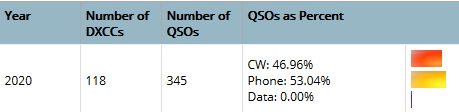
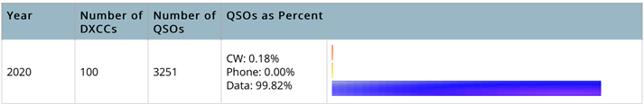

I never looked at this report. Interesting.  60 were with 10 W and 60 were between 20 and 100 W. Not working toward any goals here. Working with the lowest power possible makes working the DX interesting and personally engaging. Hones some skills a little bit, too, for when my needed DX shows up someday. CU on the bands! 73 de Al N6TA From: Chat <chat-bounces@ncdxc.org> On Behalf Of Andreas Junge via Chat Well, I just worked my 100th country in 2020 today. I remember when there was the DXCC 2000 Millennium Award and Omri AA6TA (SK) pulled it off in the month of January - I think. I did mine on FT8 (99%). I tip my hat retroactively! How is everybody else doing?  73, Andreas, N6NU |